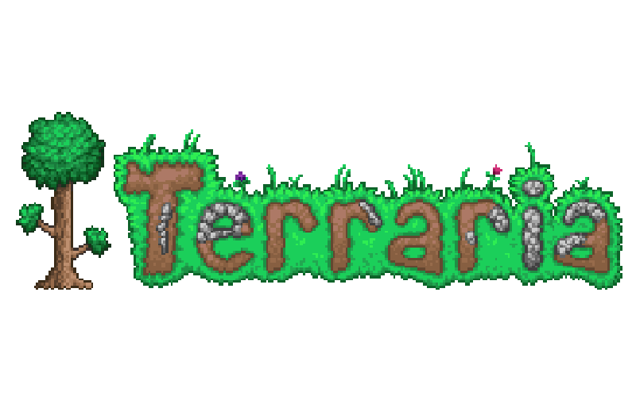
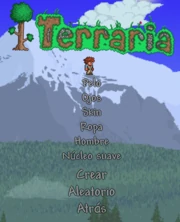

Wiki Terraria.S
Bienvenido a la wiki de Terraria echa por Sebastián Ferraro, esta se irá actualizando según valla tendiendo que hacer los desafíos del curso de aprende programando, también aclaro que la misma está claramente inspirada en la wiki original de Terraria, por lo que abra barias similitudes entre ambas, y casi toda la información que ponga en esta página será sacada de ella.
Guías:
-
Personaje:
Antes de empezar a jugar, es necesario crear un personaje y un mundo. Si jugarás solo/a, empieza entrando a la parte de "Un jugador" y luego ve a "Crear personaje". Al crear tu personaje puedes elegir desde su género hasta su estilo de zapatos y camisa, pero si no quieres perder mucho tiempo puedes presionar el botón Aleatorio para que todo se genere al azar, ya que esto no afecta al juego.
También hay que recalcar que el personaje cuenta con un núcleo, que puede ser: viaje, suave, medio y extremo.
 -
Mundo
Una vez que ya tengas un personaje, es necesario tener un mundo para poder jugar. Selecciona a tu personaje y haz clic en "Crear mundo". Los mundos son generados de forma aleatoria y en tres tamaños, que son elegidos por el jugador: pequeño, mediano y grande. Si es la primera vez que juegas Terraria, es recomendable hacer un mundo pequeño debido a que facilita mucho la exploración, pero si lo haces grande, habrá más recursos, panales e islas flotantes, aunque será más difícil encontrarlos.
-
Minerales
Los minerales son indispensables para el juego y gracias a ellos se pueden crear gran variedad de objetos, armas y armaduras. La calidad y cantidad de un mineral está relacionado con la profundidad, de modo que encontrarás vetas de mayor tamaño y contenedoras de mineral de mejor calidad entre más profundo te encuentres.
En el juego hay 6 minerales básicos (solo 5 de ellos entre 2 posibles se generan por mundo y el ultimo solo encontrado en el inframundo), ordenados de menor a mayor calidad en:
- cobre (anaranjado) / estaño (amarillo grisáceo)
- hierro (gris con tonos café) / plomo (gris oscuro con tonos azulados)
- plata (blanco) / tungsteno (blanco verdoso)
- Oro (amarillo) / platino (blanco azulado
- Mineral carmesí (rojo con tonos grises) / Mineral endemoniado (morado)
- Piedra infernal ( tonos rojos y negros )
 Facebook
Facebook Instagram
Instagram